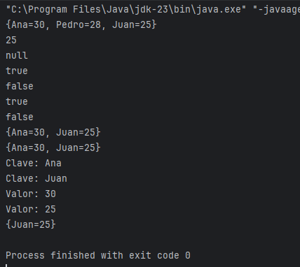
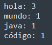
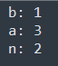
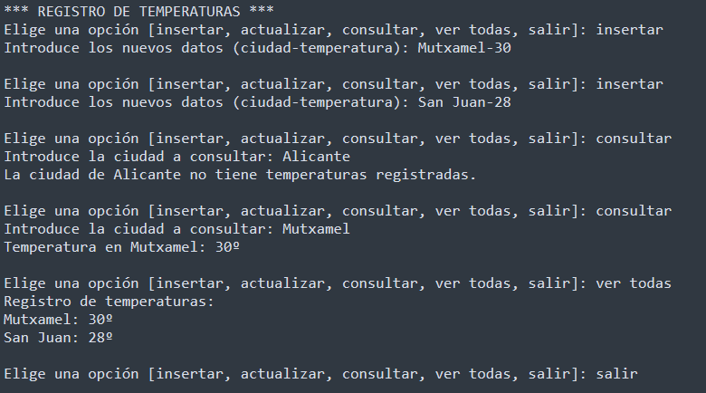
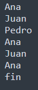
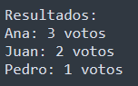

7.2. Mapas o diccionarios
Interfaz Map --> (clave-valor)
Como ya vimos durante la introducción a las estructuras del tema, un mapa es una estructura de datos que almacena información en forma de pares clave-valor, y es muy útil cuando necesitamos acceder a elementos de forma rápida. Es como un "diccionario" o una "agenda", donde cada entrada tiene dos partes: una clave (que es única) y un valor (que puede ser cualquier dato).
La estructura que usa Java para implementar los mapas es HashMap,
import java.util.HashMap;
public class EjemploHashMap {
public static void main(String[] args) {
HashMap<String, Integer> edades = new HashMap<>();
edades.put("Juan", 25);
edades.put("Ana", 30);
edades.put("Pedro", 28);
System.out.println("Edad de Juan: " + edades.get("Juan"));
}
}
En este ejemplo, las claves son los nombres ("Juan", "Ana", "Pedro") y los valores son las edades (25, 30, 28). La clave se convierte en un índice mediante una función hash, y cada valor se almacena en una celda de una tabla hash (una "lista" muy grande con muchas "casillas" donde se guardan las claves y los valores de forma súper eficiente). La pregunta es, ¿cómo encontramos la casilla correcta para guardar o buscar un dato? Lo vemos en el siguiente apartado.
Los métodos principales de HashMap en Java son:
- put(K, V): para insertar un par clave-valor. En caso de que una clave ya exista, pisaremos el valor antiguo por el nuevo.
- get(K): para obtener el valor a partir de una clave.
- remove(K): eliminar un valor a partir de su clave. También se puede usar remove(K key, V value) para eliminar sólo si el valor coincide.
- containsKey(K): verifica si la clave existe.
- containsValue(V value): verifica si existe un valor.
- keySet(): devuelve una lista con las claves. También sirve para iterar sólo con claves.
- values(): devuelve una lista con los valores. También sirve para iterar sólo con valores.
HashMap<String, Integer> edades = new HashMap<>();
edades.put("Juan", 25);
edades.put("Ana", 30);
edades.put("Pedro", 28);
System.out.println(edades); // {Juan=25, Ana=30, Pedro=28}
System.out.println(edades.get("Juan")); // 25
System.out.println(edades.get("Carlos")); // null
System.out.println(edades.containsKey("Ana")); // true
System.out.println(edades.containsKey("Carlos")); // false
System.out.println(edades.containsValue(30)); // true
System.out.println(edades.containsValue(40)); // false
edades.remove("Pedro");
System.out.println(edades); // {Juan=25, Ana=30}
edades.remove("Ana", 29); // no elimina nada porque el valor no coincide
System.out.println(edades); // {Juan=25, Ana=30}
for (String clave : edades.keySet()) {
System.out.println("Clave: " + clave); //Clave: Juan
// Clave: Ana
}
for (Integer valor : edades.values()) {
System.out.println("Valor: " + valor); //Valor: 25
//Valor: 30
}
edades.remove("Ana", 30); // elimina Ana porque el valor coincide
System.out.println(edades); // {Juan=25}
- getOrDefault(key, defaultValue): es un método que permite obtener un valor asociado a una clave específica, pero si la clave no existe en el mapa, devuelve un valor por defecto en su lugar.
HashMap<String, Integer> edades = new HashMap<>();
edades.put("Ana", 9);
edades.put("Luis", 7);
// obtener la edad de Ana (existe en el HashMap)
System.out.println(edades.getOrDefault("Ana", 18)); // salida: 9
// obtener la edad de Pedro (no existe, usa el valor predeterminado 18)
System.out.println(edades.getOrDefault("Pedro", 18)); // salida: 18Es útil cuando trabajamos con conteos o acumulaciones, como en el problema Va de modas... de Acepta el Reto.
Método de iteración en un HashMap
Hasta ahora, hemos visto los métodos keySet() y values() para obtener claves y valores por separado. Pero si necesitamos interaccionar con nuestro mapa para obtener claves y valores a la vez, usaremos un for-each con .entrySet() (clave-valor):
for (Map.Entry<String, Integer> entry : map.entrySet()) {
System.out.println("Clave: " + entry.getKey() + ", Valor: " + entry.getValue());
}
// Clave: Juan, Valor: 25
// Clave: Ana, Valor: 30
// Clave: Pedro, Valor: 28
Si has probado los iteradores anteriores, te habrás dado cuenta de algo importante: las estructuras HashMap, igual que pasaba con los HashSet, no mantienen el orden de inserción. Si necesitamos orden, usaremos LinkedHashMap (aunque su uso no es muy común).
Asociar clave con múltiples valores
HashMap<String, List<String>> amigos = new HashMap<>();
// añadimos los amigos de Juan
amigos.put("Juan", new ArrayList<>());
amigos.get("Juan").add("Pedro");
amigos.get("Juan").add("Ana");
System.out.println(amigos); //{Juan=[Pedro, Ana]}
Uso de mapas manipulando archivos JSON
El uso principal de los HashMap actualmente es la manipulación de archivos tipo JSON característicos de las APIs y microservicios. También en acceso a bases de datos NoSQL (MongoDB).
{
"nombre": "Juan",
"edad": 25
}
Otro ejemplo:
{ "usuario": { "nombre": "Carlos", "edad": 32, "activo": true, "hobbies": ["fútbol", "lectura", "música"], "direccion": { "ciudad": "Madrid", "pais": "España" } } }
Aquí tenemos:
- Un objeto "usuario".
- Claves con valores de distintos tipos (String, Number, Boolean).
- Un array "hobbies".
- Otro objeto anidado "direccion".
Una librería típica para manipular JSON es Gson (com.google.gson.Gson), de Google. Aquí tienes un ejemplo con Gson para convertir JSON a un objeto Java:
import com.google.gson.Gson;
class Usuario {
String nombre;
int edad;
boolean activo;
}
public class Main {
public static void main(String[] args) {
String json = "{ \"nombre\": \"Carlos\", \"edad\": 32, \"activo\": true }";
Gson gson = new Gson();
Usuario usuario = gson.fromJson(json, Usuario.class);
System.out.println("Nombre: " + usuario.nombre);
System.out.println("Edad: " + usuario.edad);
System.out.println("Activo: " + usuario.activo);
}
}Ejercicio 1
Dado un texto introducido por el usuario, cuenta cuántas veces aparece cada palabra y muestra el resultado.
Entrada de ejemplo:
hola mundo hola java hola código
Salida esperada:

Ejercicio 2: contador de caracteres
Dada una palabra, cuenta cuántas veces aparece cada carácter.
Entrada de ejemplo:
banana
Salida esperada:

Ejercicio 3. Registro de temperaturas por ciudad
Con todo el lío de la DANA, los negacionistas del cambio climático se están replanteando sus creencias y han decidido implementar un sistema sencillo que registre la temperatura en diferentes ciudades para ver si todo lo que se dice por parte de la comunidad científica es verdad. Como no se fían de los sensores automáticos, ellos mismos medirán la temperatura con un termómetro e irán insertando los datos a mano mediante una app.
- Cada ciudad tendrá una temperatura registrada.
- El usuario podrá insertar, actualizar y consultar temperaturas por ciudad.
- También podrá mostrar un listado de todas las temperaturas registradas en todas las ciudades.
Ejemplo de ejecución:

Ejercicio 4. Evitando el pucherazo
En los cursos de ciclos formativos del instituto se está llevando a cabo la elección de delegado, en la que cada estudiante escribe el nombre de su candidato en un papel. Como la mayoría de los estudiantes son de informática y no se fían del proceso de votación, deciden aprovechar sus conocimientos de programación para crear una pequeña app que contabilice los votos y determine cuántos votos recibe cada candidato de forma objetiva.
Entrada:
- Se escriben nombres de candidatos, uno por línea.
- Para finalizar la votación, se escribe la palabra "fin".
Entrada:

Salida:
